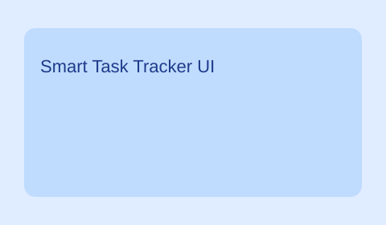
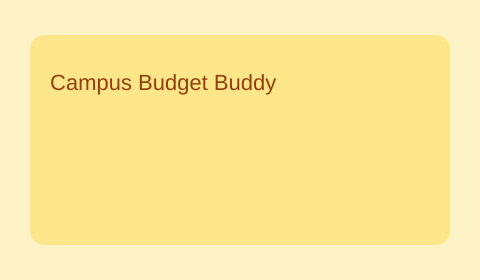
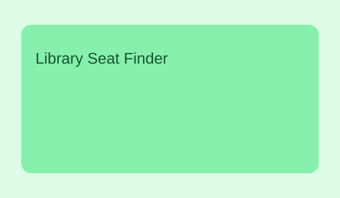

Smart Task Tracker
A lightweight planner that helps students manage assignments and exam deadlines efficiently.
Project Link
A lightweight planner that helps students manage assignments and exam deadlines efficiently.
Project Link
A personal budgeting app with charts and alerts to improve student financial planning.
Project Link
A web app prototype to view available study spaces in real time using location indicators.
Project Link